Building the Trust Layer Behind Vietnam’s $930B Export Economy
Đọc bàiRead →
GOE Alliance Convenes Vietnam's Commodity Sector Around New Financial Rails
Ho Chi Minh City, 29 July 2026 GOE Alliance hosted a closed-door Special Discussion Session on Vietnam's Commodity Market, bringing together senior representatives from across the country's agricultural export, logistics, banking, and investment ecosystem to examine a single question: can new on-chain financial infrastructure solve the capital constraints holding Vietnam's commodity sector back? The session drew Vinh Hiep — Vietnam's

Vietnam Innovation & Policy Labs is live. 🇻🇳
Vietnam Innovation & Policy Labs is live. 🇻🇳 29 July in Ho Chi Minh City, GOE Alliance, AVSE Global and the Tony Blair Institute for Global Change signed the Founding Declaration of Vietnam Innovation & Policy Labs (VIPL) — an independent policy research and advisory institution, built to bring practical expertise into Vietnam's policymaking process at the right time and
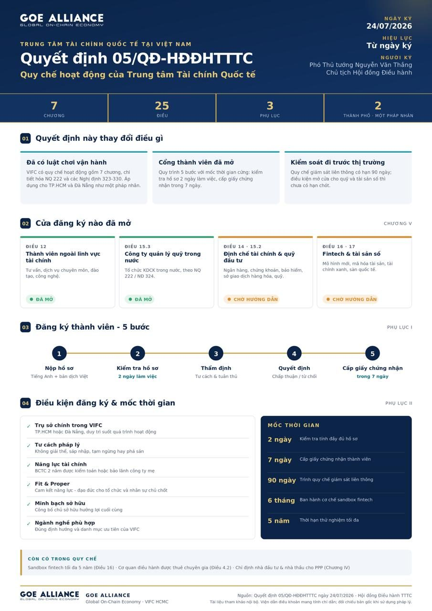
THE VIFC NOW HAS ITS OPERATING RULEBOOK — MEMBER REGISTRATION IS OPEN
On 24 July 2026, Deputy Prime Minister Nguyễn Văn Thắng, Chairman of the Executive Council, signed Decision 05/QĐ-HĐĐHTTTC issuing the Operating Regulation of the Vietnam International Financial Center. Effective immediately on signing. The VIFC is no longer a legal framework on paper. It now has operating rules: 7 chapters, 25 articles, 3 appendices — defining who can join, how, and
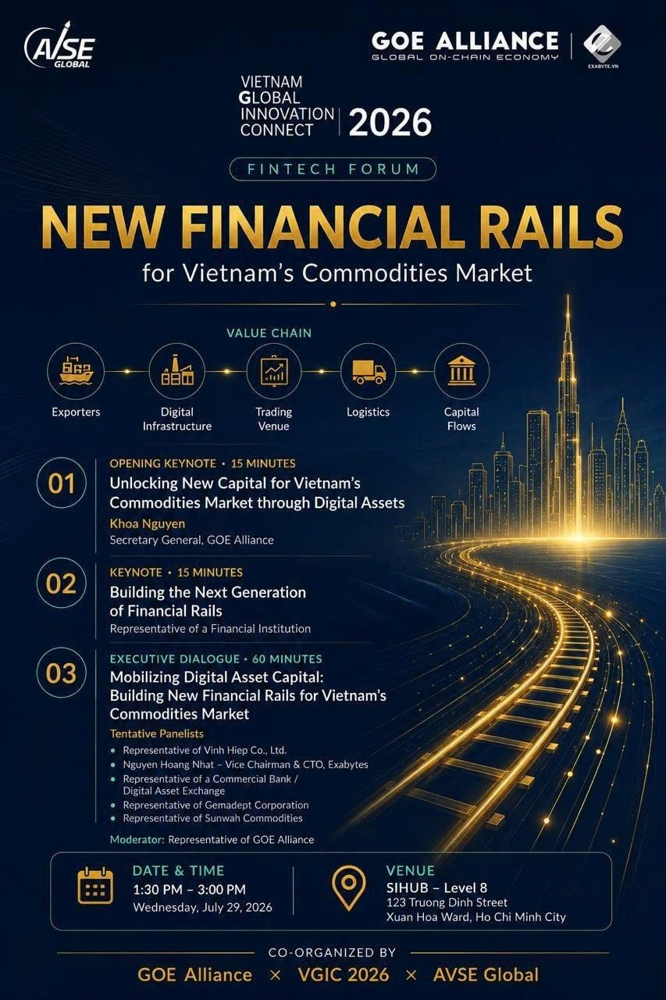
On-chain is entering Vietnam's real economy — through the front door
On-chain is entering Vietnam's real economy — through the front door. 🇻🇳 On July 29, GOE Alliance co-hosts a dedicated track: [FinTech · The On-Chain Economy] - New Financial Rails for Vietnam's Commodities Market at VGIC 2026 — the forum bringing the Top 100 Vietnamese innovators from around the world back home to shape Vietnam's growth strategy through technology and
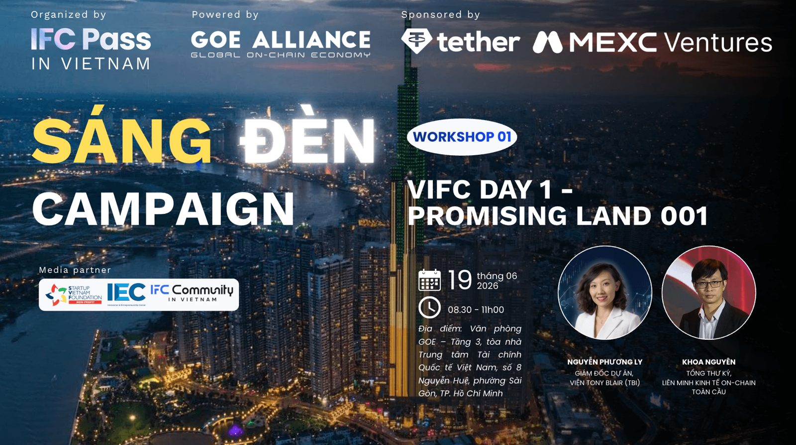
[Recap] WORKSHOP: VIFC Day 1 - Promising Land 001
This morning, we turned the lights on. At the VIFC-HCMC Building on 08 Nguyen Hue, we opened Sáng Đèn (“Turning on the Lights”) — the first event in a three-month series bringing the Vietnam International Financial Centre to life, hosted by GOE Alliance and the IFC Pass in Vietnam. The room said it all. 50 founders, investors, fund managers, Web3
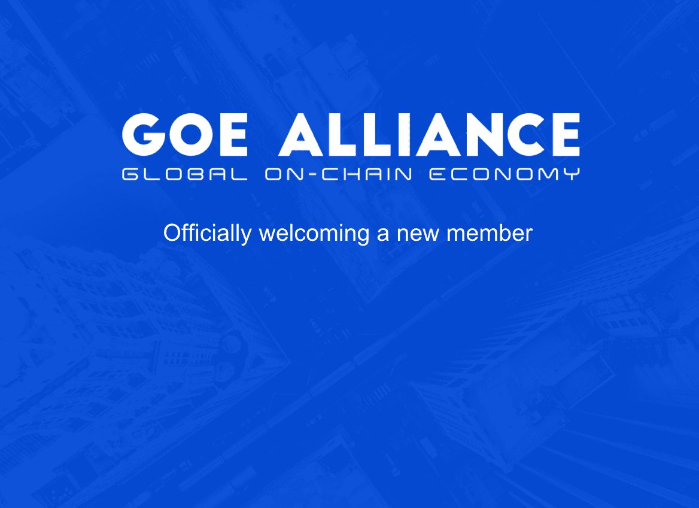
Officially welcoming Newton Protocol as a new member of GOE Alliance
Newton Protocol is “The Authorization Layer for on-chain Finance” — an infrastructure layer that enables financial institutions to define and enforce compliance policies, risk management frameworks, and business rules directly within on-chain transactions — producing verifiable compliance receipts that institutions and regulators can trust. Developed by Magic Labs — the team behind wallet and onboarding infrastructure supporting more than 50

WORKSHOP: VIFC Day 1 - Promising Land 001
Chuỗi sự kiện nằm trong Sáng Đèn Campaign · VIFC-HCMC Building [English below] Dubai không sinh ra là một trung tâm tài chính. Singapore không phải lúc nào cũng là nơi dòng vốn toàn cầu chọn đổ vào. Và London không phải ngẫu nhiên trở thành cái nôi của làn sóng fintech toàn cầu. Tất cả đều có một thời
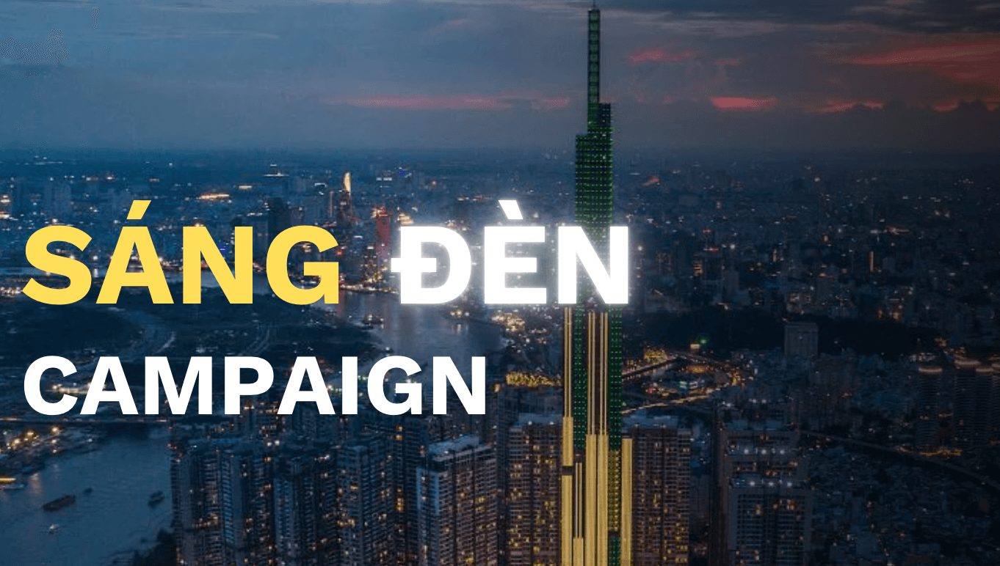
LIGHTS ON CAMPAIGN: Vietnam Is Building Its Own Financial Promised Land
Launching June 19, 2026 — VIFC-HCMC Building [Vietnamese below] Khởi động 19/6/2026 — VIFC-HCMC Building In 2004, Dubai launched the Dubai International Financial Centre (DIFC) in the middle of the desert — an international financial hub built in a place few believed could become a global financial center. Two decades later, DIFC contributes more than USD 26 billion to Dubai’s
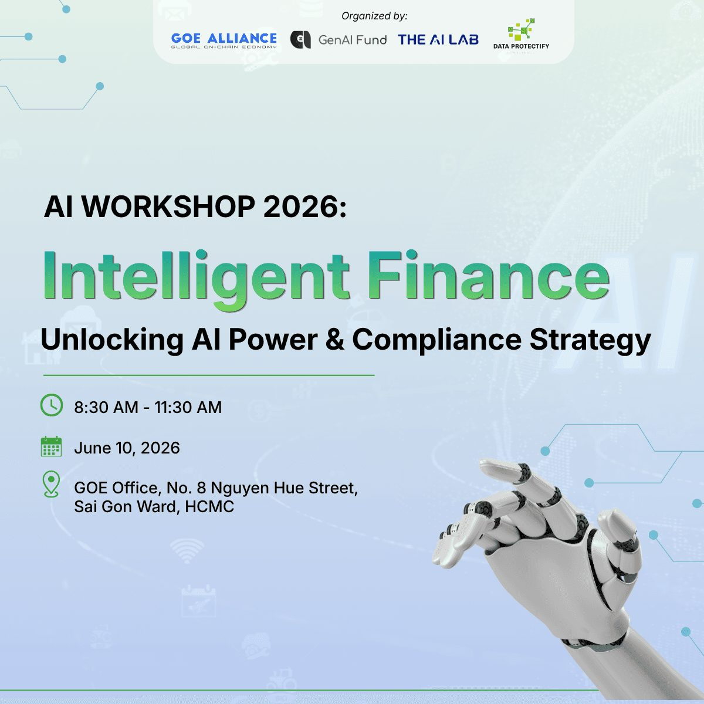
Intelligent Finance: Unlocking AI Power & Compliance Strategy
Artificial Intelligence (AI) is rapidly emerging as one of the most transformative sectors globally, reshaping industries, economies, and the future of digital innovation. As AI adoption accelerates across finance, banking, fintech, and enterprise operations, GOE Alliance continues to actively explore the intersection between AI, digital economy, and next-generation financial infrastructure. To contribute to this growing conversation and support industry understanding
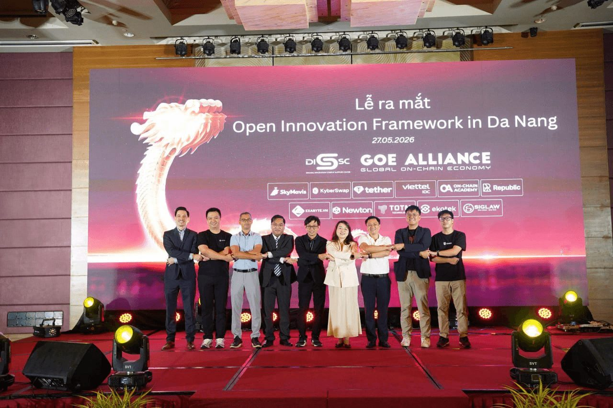
DAVAS 2026: A New Alliance Takes Shape, Activating the Innovation Ecosystem
DAVAS 2026: A New Alliance Takes Shape, Activating the Innovation Ecosystem *Da Nang, May 27, 2026* On the evening of May 27th, the DAVAS 2026 Gala Dinner marked a new turning point for the summit after three editions. Beyond its role as a startup and investment forum, DAVAS 2026 demonstrated its ambition to become a platform connecting innovation ecosystems and
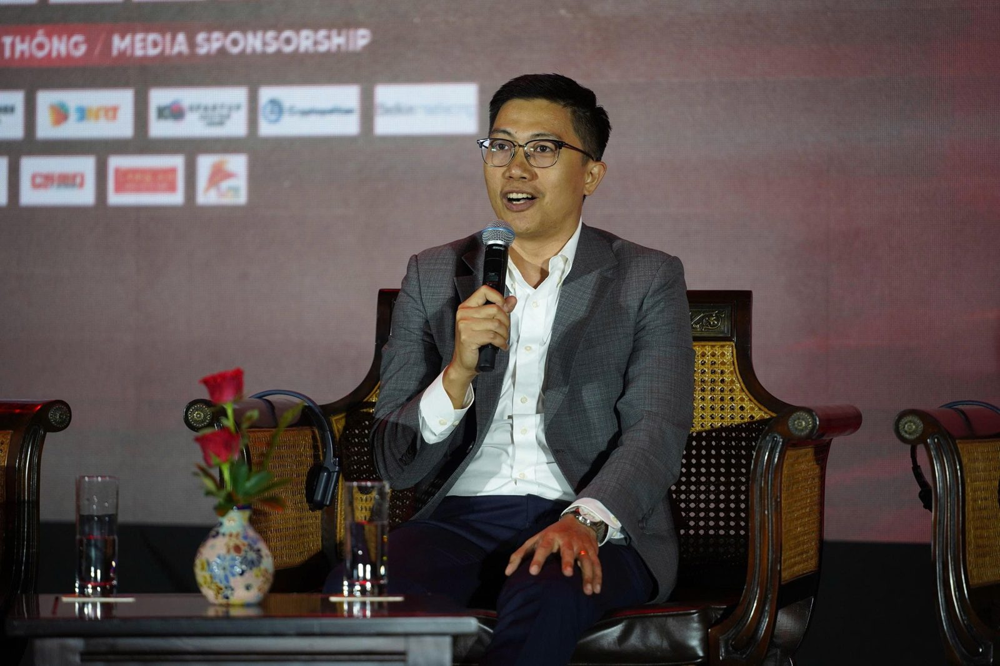
GOE Alliance at DAVAS 2026: Redefining Supervision as Vietnam's Sandbox Advantage
As part of DAVAS 2026, Dr. Tony Trần, Policy & Innovation Director at GOE Alliance, joined the panel discussion on “Da Nang IFC and Sandbox – Drivers of Innovation in Vietnam.” Drawing from his experience contributing to the development of Vietnam’s IFC sandbox framework, Tony highlighted an often-overlooked factor behind successful financial centers: effective supervision and monitoring capabilities. Three key
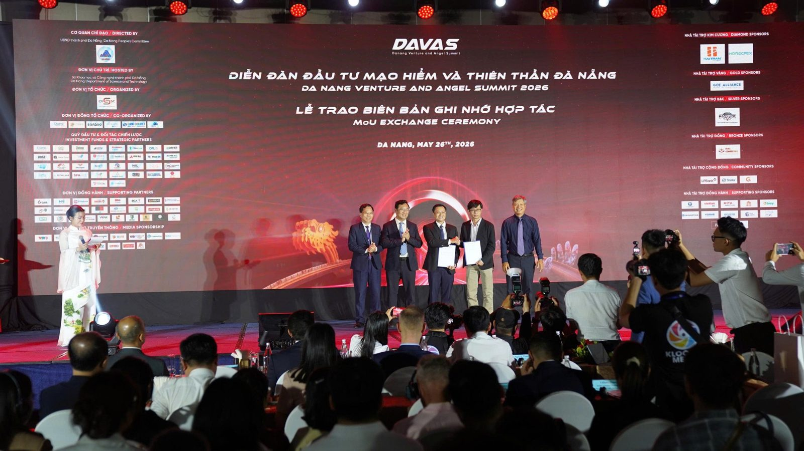
GOE Alliance Launches Vietnam's First Compliant On-Chain Innovation Framework at DAVAS 2026
Vietnam has the policy. We just built the execution layer. For years, Vietnam's on-chain ecosystem has been caught in the same deadlock: enterprises want to build, but there's no compliant framework to build *within*. Policy moves forward. Adoption waits. Nothing connects them. That changes today. At DAVAS 2026 (26/5/2026), GOE Alliance signed an MOU with DISSC — Danang's Innovation Center
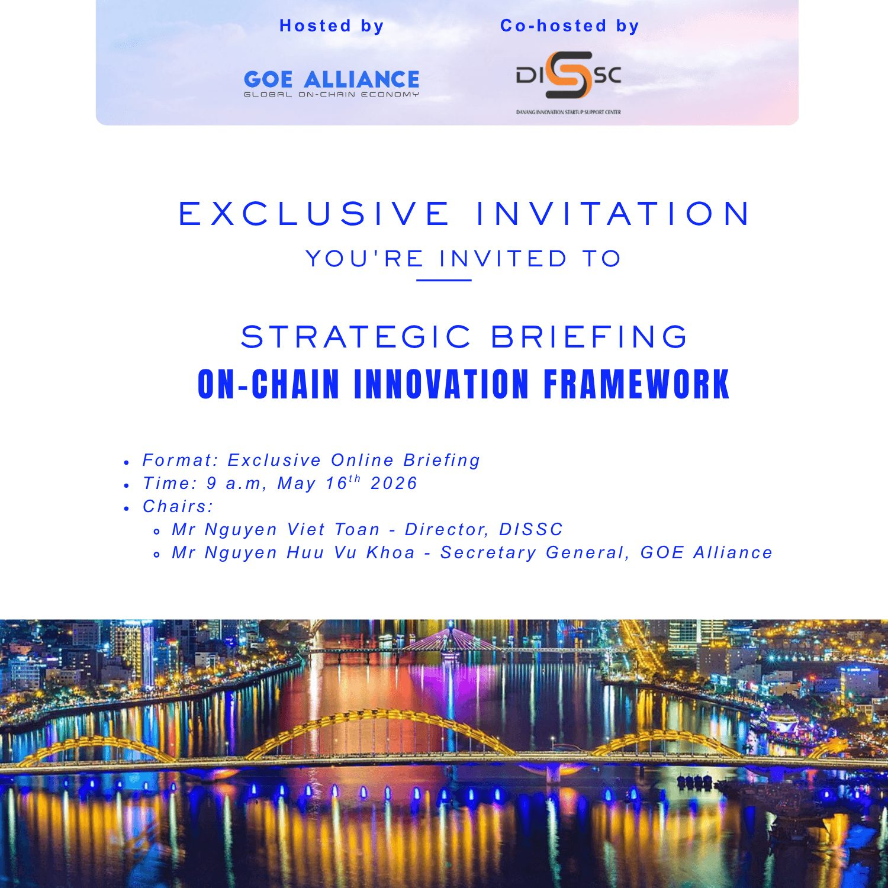
[Strategic Briefing] ON-CHAIN INOVATION FRAMEWORK
🇻🇳 GOE Partners & Friends We now have a real and immediate opportunity to activate quality on-chain use cases under a legitimate, government-backed sandbox framework in Vietnam. GOE has partnered with DISSC (Đà Nẵng Department of Science & Technology) — the body that drafted Resolution 259 and holds full authority to issue sandbox licenses in Đà Nẵng — to launch

Setting Southeast Asia's First Milestone: Activating a Compliant On-chain Corridor Between Vietnam and Indonesia, Covering 380 Million People — Over Half of ASEAN, with VIFC-HCMC at the Center
The On-chain Finance Network (OFN) initiative, launched by GOE Alliance, has for the first time demonstrated the technical feasibility of executing a compliant cross-border on-chain transaction between two KYC-verified citizens from two sovereign nations — without transferring raw personal data outside either country's territory. This marks a significant milestone in Vietnam's journey toward becoming the region's digital asset hub. On
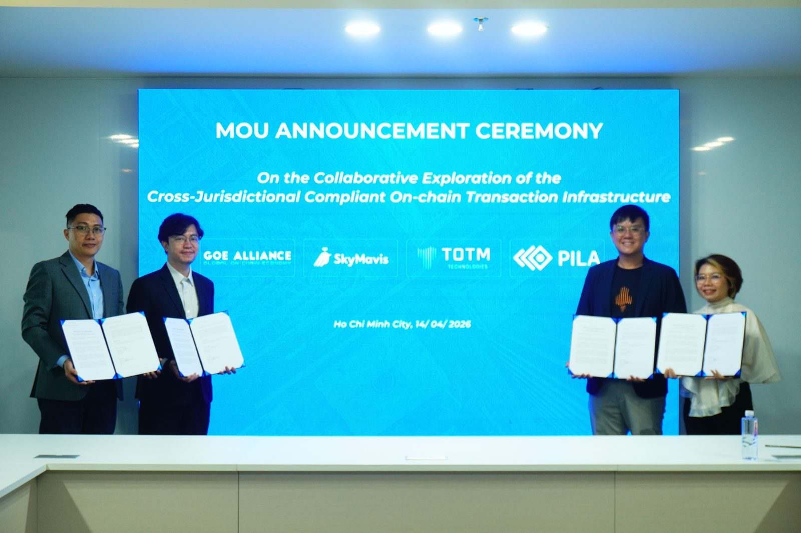
On-chain Finance Network Initiative Unveiled at Vietnam FinTech & RegTech Immersion Program 2026 - Marking a New Chapter for Southeast Asia's Digital Economy
A proof-of-concept milestone demonstrating that a compliant, interoperable on-chain economy between sovereign jurisdictions is technically achievable — with Vietnam and Indonesia as the first participating nations. VIFC-HCMC, Ho Chi Minh City — GOE Alliance (Global On-chain Economy Alliance) today introduced the On-chain Finance Network (“OFN”) — a technology initiative proposing a new class of regulated, interoperable infrastructure for digital assets
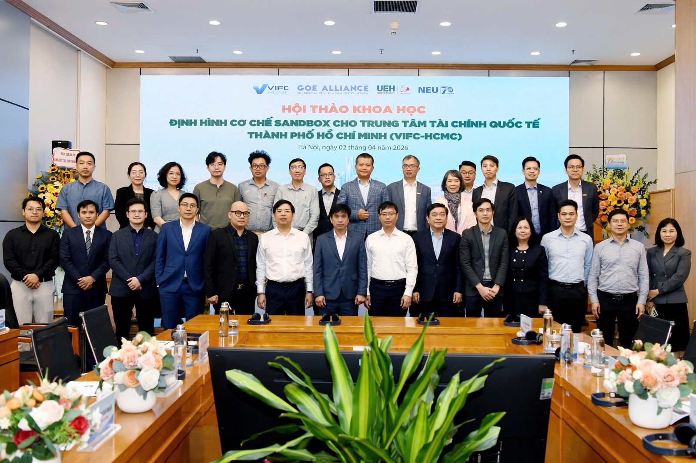
Recap | Academic Conference: "Shaping the Sandbox Framework for the Vietnam International Financial Centre – Ho Chi Minh City (VIFC-HCMC)"
Event Overview On the morning of 2 April 2026, the Scientific Workshop on "Shaping the Sandbox Framework for VIFC-HCMC" was held at the National Economics University (NEU) in Hanoi. The event was co-organised by four institutions: NEU, the University of Economics Ho Chi Minh City (UEH), Vietnam International Financial Center in Ho Chi Minh City (VIFC-HCMC), and the Global On-chain
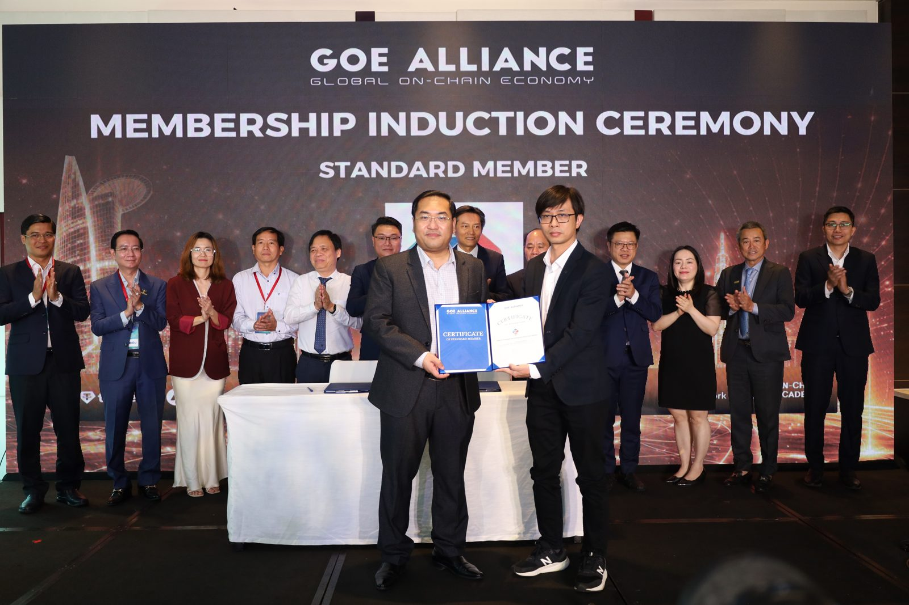
Exabyte Joins GOE Alliance to Put Vietnam's Agricultural Economy On-Chain
Ho Chi Minh City, March 21, 2026 The Next Growth Engine Has a Harvest Cycle Vietnam's GDP reached USD 514 billion in 2025, growing 8.02%. The government has set a double-digit growth target for 2026. Reaching it requires new capital rails beyond the manufacturing and export channels that drove growth so far. Agriculture is the most viable entry point. The
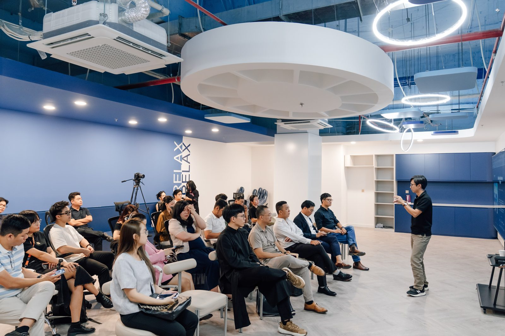
GOE Alliance Briefing: Bright Lights (Sáng Đèn) Campaign
20 March 2026 | Level 3, VIFC-HCMC Building, 8 Nguyen Hue Setting the Context: A Campaign for a National Milestone On March 20, 2026, GOE Alliance hosted a briefing session to introduce the Bright Lights (Sáng Đèn) campaign — a nationwide initiative marking the launch month of the VIFC-HCMC Building. The session was designed not just as an introduction, but
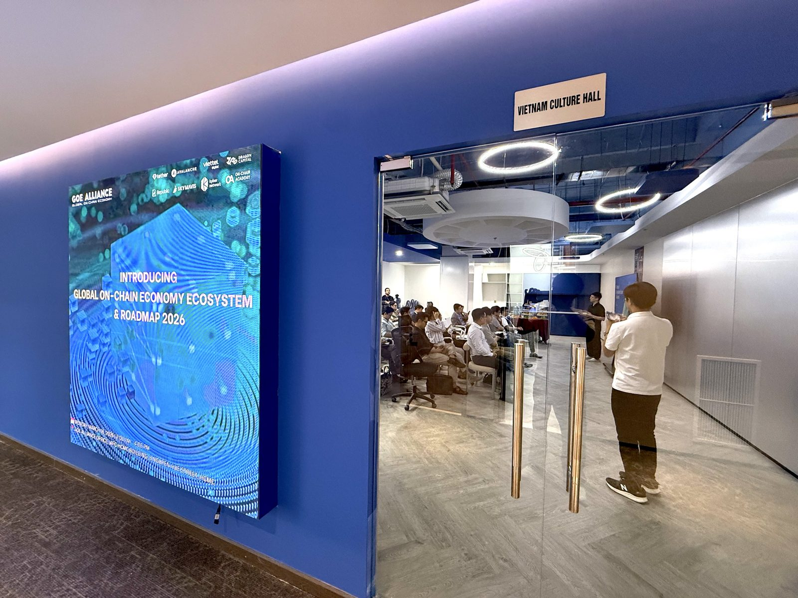
GOE Alliance Meeting: Introducing the Ecosystem and 2026 Roadmap
Date: Noon, March 16, 2026 Location: VIFC Building, 8 Nguyen Hue, Ho Chi Minh City At noon on March 16, 2026, the Global On-chain Economy Alliance (GOE Alliance) hosted a strategic meeting at the VIFC Building — bringing together organizations, businesses, investors, and members of the Web3 community to explore the emerging on-chain economy and the evolving role of the
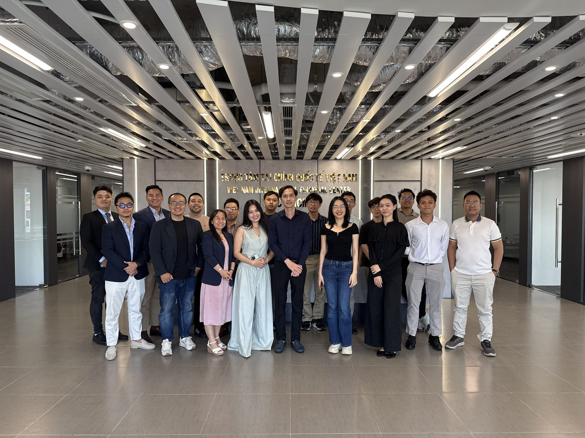
Fintech Hub New Year Meeting: Where Strategy Meets Action
March 11, 2026 | Sihub — 123 Truong Dinh, 6th Floor, HCMC This morning, over 20 senior representatives from leading corporations, enterprises, and ecosystem builders gathered for the inaugural 2026 meeting hosted by VIFC-HCMC and GOE Alliance — chaired by Assoc. Prof. Dr. Nguyen Huu Huan, Vice Chairman of the VIFC-HCMC Executive Agency . This was not a networking event.
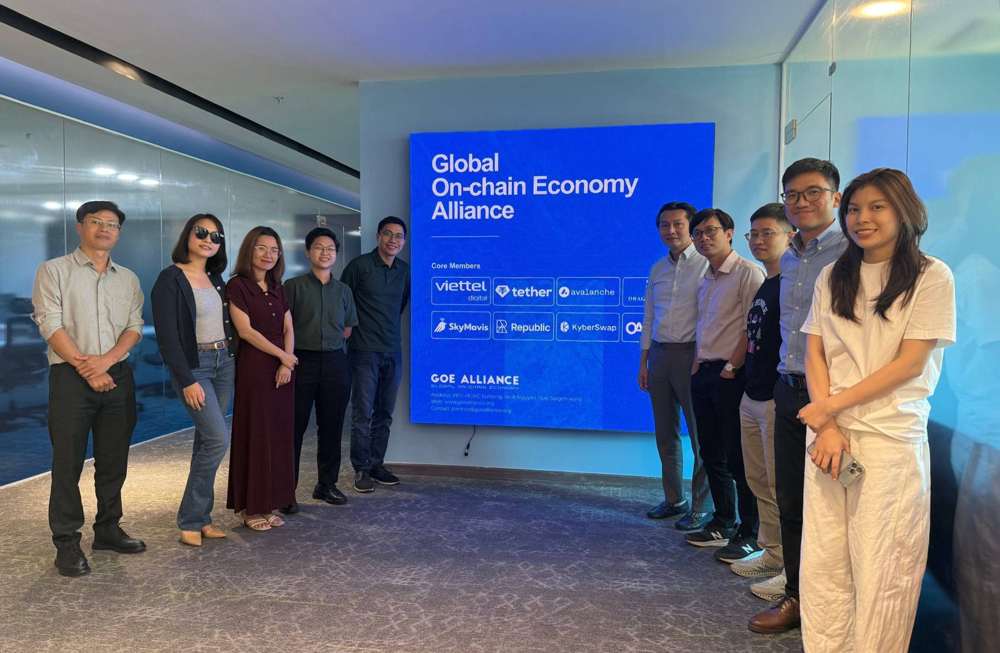
Aligning the Next Phase of the On-Chain Economy: GOE Alliance Strategic Meeting at VIFC-HCMC
Aligning the Next Phase of the On-Chain Economy: GOE Alliance Strategic Meeting at VIFC-HCMC On March 5, members of the Global On-Chain Economy Alliance (GOE Alliance) convened at the Alliance office in the VIFC-HCMC Building for their annual strategic meeting. The session brought together the eight member organizations represented in the Alliance alongside the initiating members, marking an important coordination
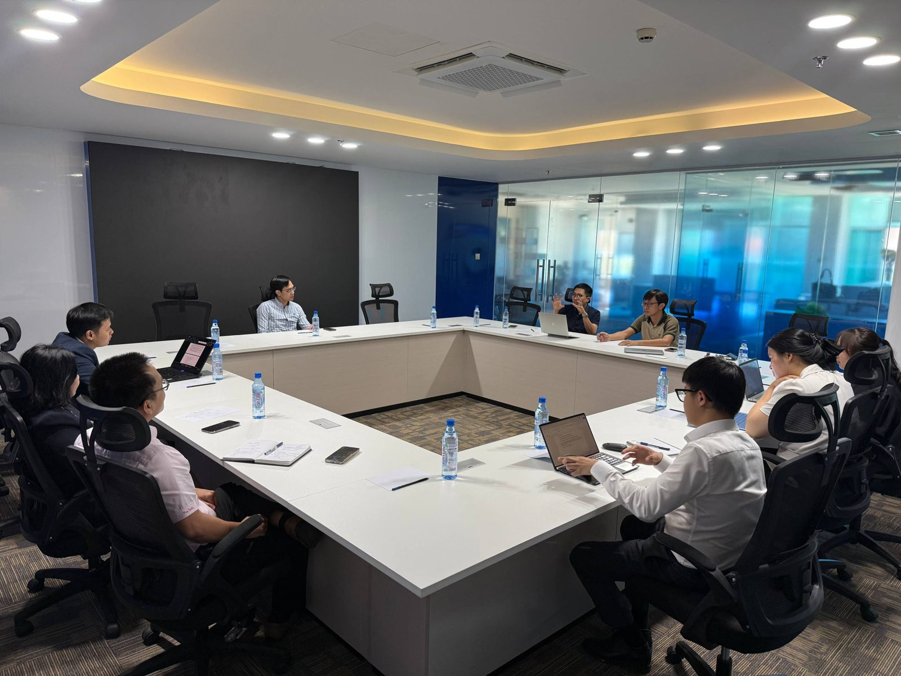
Working Session with UEH on the Blockchain Sandbox Study for VIFC-HCMC
04 March 2026 | VIFC-HCMC Building, 8 Nguyen Hue Street | Ho Chi Minh City At noon on March 4, 2026, the Global On-Chain Economy Alliance (GOE Alliance) joined a working session with the University of Economics Ho Chi Minh City (UEH) to begin implementation of a Consulting Report on Sandbox Mechanism for Blockchain and Crypto Assets Within the Vietnam
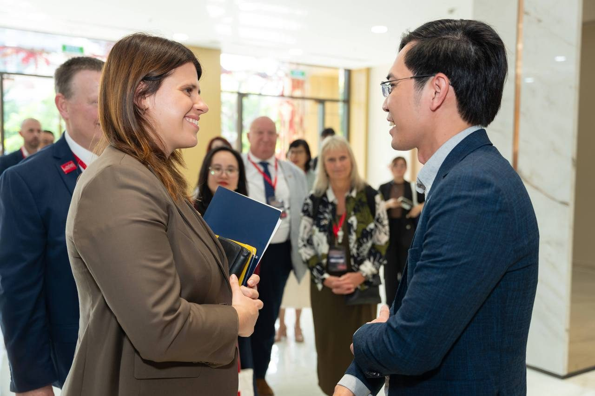
Meeting with the UK Consulate at VIFC-HCMC
Meeting with the UK Consulate at VIFC-HCMC 02 March 2026 | VIFC-HCMC Building | Ho Chi Minh City On 02 March 2026, GOE Alliance participated in a working session at the VIFC-HCMC Building to welcome Ms. Alexandra Smith , Consul General of the United Kingdom, and her accompanying delegation. The discussion focused on two strategic themes: Green Finance and Education
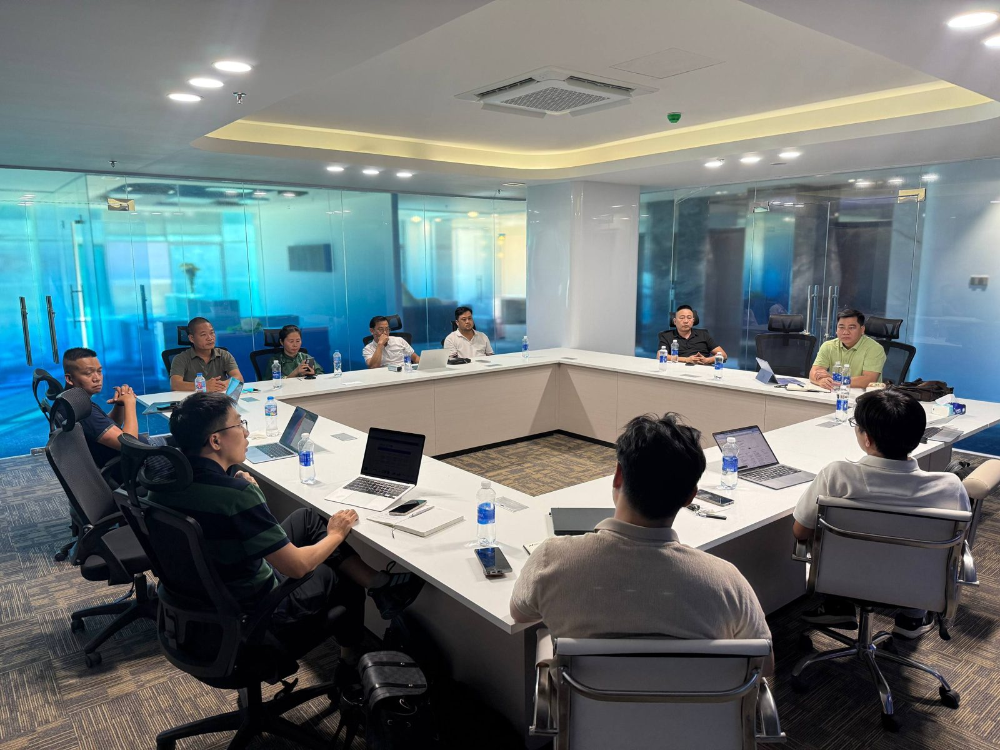
From Strategy to Structure: GOE Alliance Convenes Expert Consultation on Digital Agricultural RWA Market
From Strategy to Structure: GOE Alliance Convenes Expert Consultation on Digital Agricultural RWA Market 28 February 2026 | Level 3, GOE Alliance Office, VIFC-HCMC Building | Ho Chi Minh City On 28 February 2026, at the GOE Alliance office within the VIFC-HCMC Building, a closed-door consultation meeting was convened to accelerate the formation of a Digital Agricultural Asset Trading Center
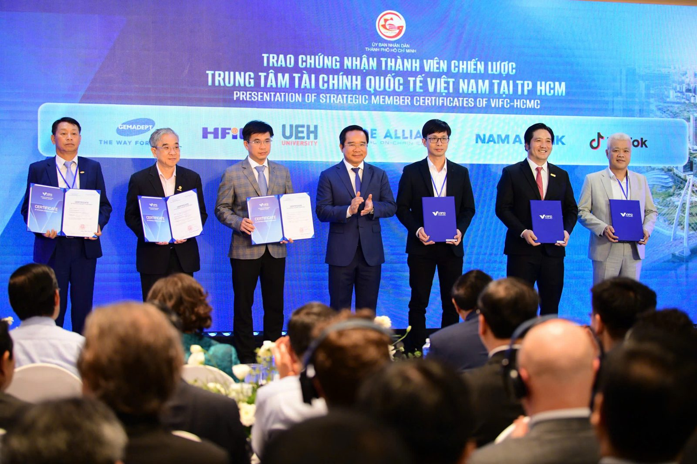
GOE Alliance Joins VIFC-HCMC as a Strategic Member
Starting from Vietnam to Build a Global Emerging On-Chain Market Network The Global On-Chain Economy Alliance (GOE Alliance) has been officially recognized as a Strategic Member of the Vietnam International Financial Center – Ho Chi Minh City (VIFC-HCMC), as the center commenced operations on February 11, 2026. Mr. Nguyen Huu Vu Khoa, representative of the Alliance, receives Strategic Member Certificate
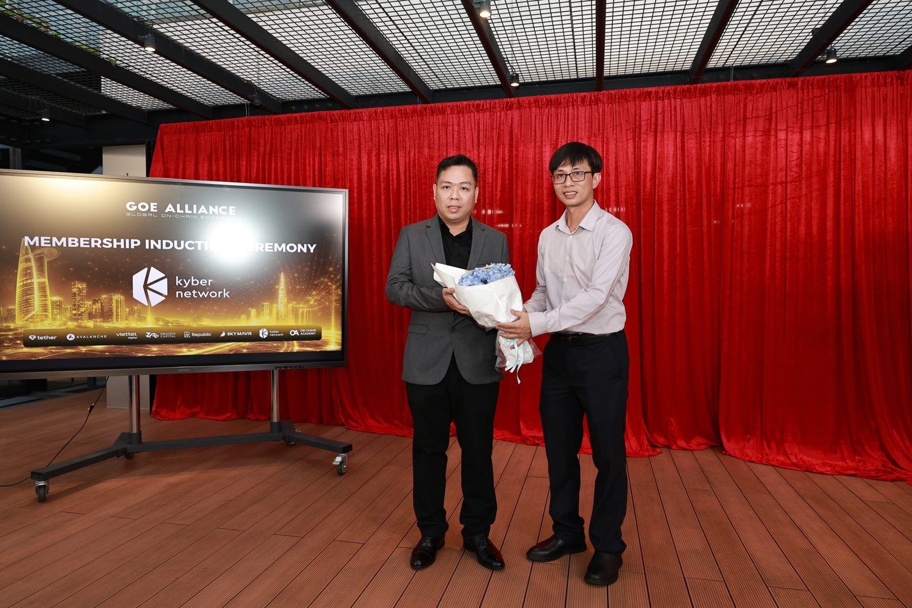
Kyber Network joins GOE Alliance to help unlock Vietnam’s on-chain era and address the structural bottlenecks restricting foreign capital flows.
Vietnam is entering a pivotal phase as an emerging market—marked by strong growth and the urgent search for new engines to sustain that momentum. The government has signaled a strategic shift toward a “double-digit growth” target, aiming for at least 10% GDP growth by 2026. According to the General Statistics Office, Vietnam’s GDP in 2025 is estimated at approximately USD
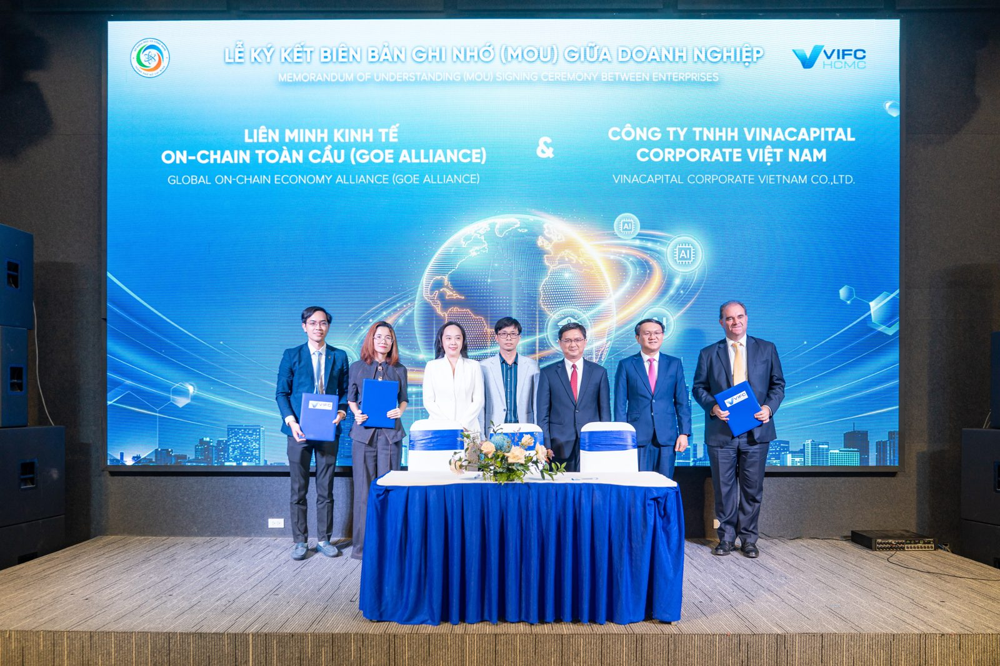
GOE Alliance Signs MoU to Advance the HCMC Digital Assets Fund
GOE Alliance announces the signing of a Memorandum of Understanding (MoU) related to the HCMC Digital Assets Fund , a market-oriented initiative intended to support the development of on-chain financial infrastructure in Ho Chi Minh City. The MoU marks a meaningful institutional milestone: it formalizes partner alignment and defines a structured path to explore fund design and ecosystem priorities in
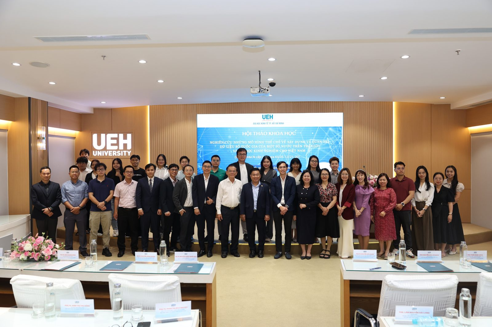
“Research on Regulatory Sandbox Mechanisms for the Blockchain and Digital Asset Sector at VIFC-HCMC” Workshop
“Research on Regulatory Sandbox Mechanisms for the Blockchain and Digital Asset Sector at VIFC-HCMC” Workshop On the afternoon of February 2, 2026 , at the auditorium of the University of Economics Ho Chi Minh City , a scientific workshop was held on Research on Regulatory Sandbox Mechanisms for the Blockchain and Digital Asset Sector at VIFC-HCMC (sandbox) . The workshop
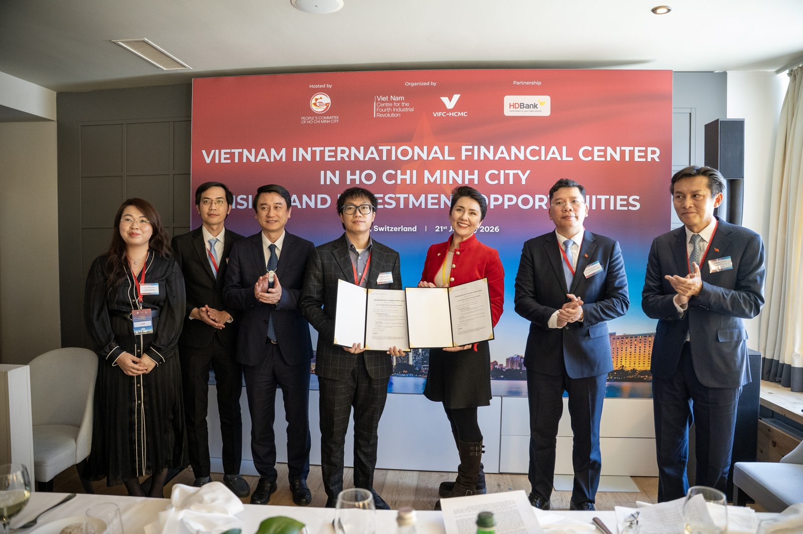
GOE Alliance Affirms Its Role as a Global Connector in Advancing the On-chain Economy at Davos 2026 Copy
GOE Alliance Affirms Its Role as a Global Connector in Advancing the On-chain Economy at Davos 2026 Davos, Switzerland – [21 January 2026] — As part of the side events of the World Economic Forum Davos 2026, the Global On-chain Economy Alliance (GOE Alliance) participated in an international networking and cooperation promotion program hosted by the Ho Chi Minh City
On-Chain Finance Network: The New Digital Infrastructure Powering IFC-HCM
As a latecomer among regional financial centres, Ho Chi Minh City’s International Financial Centre (IFC-HCM) must forge a new competitive edge—one that cannot be achieved by simply replicating models from Singapore or Hong Kong. That edge is the on-chain economy. To realise this vision, the Global On-chain Economy Alliance (GOE Alliance) has been created as an open economic laboratory where
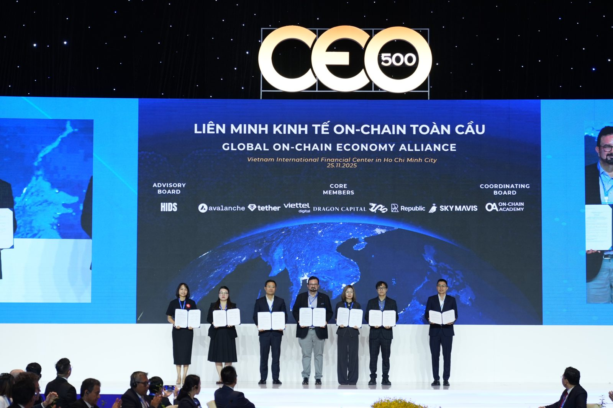
Launching the Global On-Chain Economy Alliance at the Vietnam International Financial Center
On November 25, 2025, a milestone event took place in Ho Chi Minh City: the official launch of the Global On-Chain Economy Alliance (GOE Alliance) at the Vietnam International Financial Centre (VIFC) in Ho Chi Minh City. The announcement was made during the 2025 Autumn Economic Forum, with the attendance of Prime Minister Pham Minh Chinh and City Party Secretary